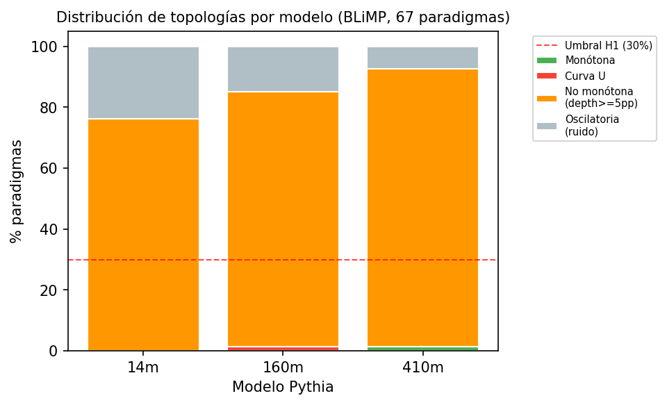
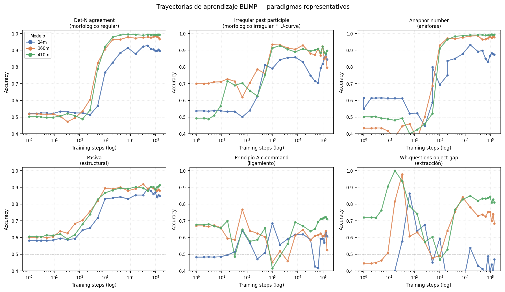
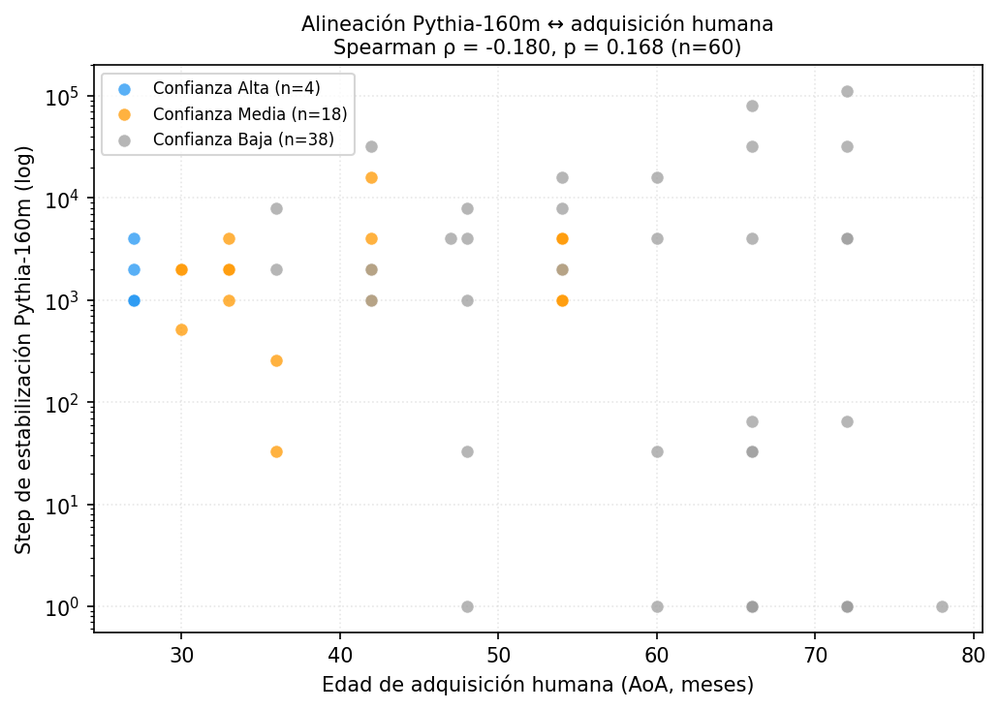
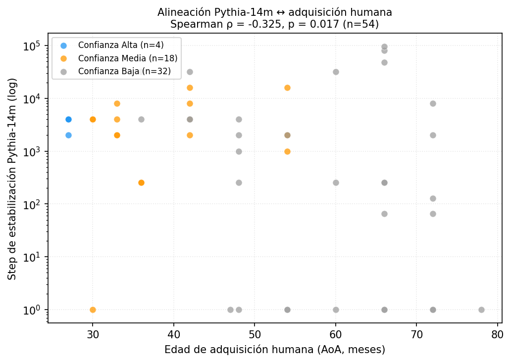
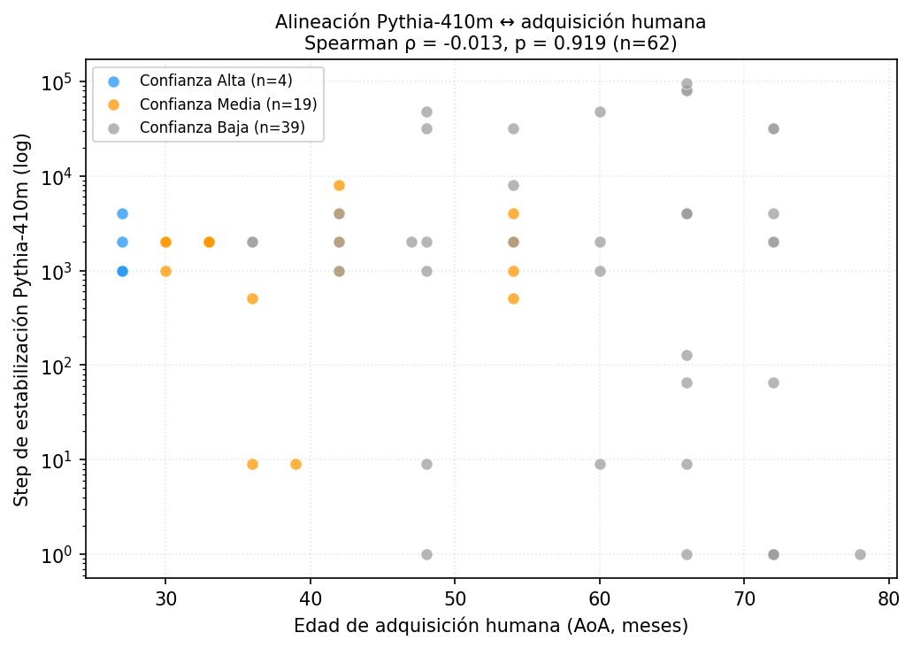

Trayectorias de adquisición sintáctica en Pythia y su alineación con la adquisición humana del lenguaje
Imitación de formas de alta frecuencia: "went", "ate".
Inducción de regla general e irregularidades erróneas: "goed". [Valle de la U]
Dominio de la regla general y excepciones, recuperando la precisión.
• Los transformers autorregresivos se optimizan mediante descenso de gradiente en enormes corpus web sin curriculum explícito.
• ¿Se genera esta tensión interna entre el sesgo de frecuencia temprana y la abstracción algorítmica posterior?
• Mapeamos longitudinalmente 24 checkpoints log-lineales de Pythia sobre los 67 paradigmas sintácticos de BLiMP para trazar estas curvas.
Al menos el 30% de los paradigmas BLiMP muestran caídas de precisión de ≥ 5 pp seguidas de posterior recuperación.
Existe correlación estadísticamente significativa (Spearman ρ > 0.3) entre estabilización sintáctica de Pythia y AoA humana.
Los paradigmas morfológicos irregulares exhiben valles conductuales de curva en U significativamente más profundos que los estructurales.
Evaluamos la familia Pythia deduplicada (14M, 160M, 410M). Analizamos 24 checkpoints log-espaciados desde el step 0 al 143k.
Benchmark BLiMP (67 paradigmas, 1.000 pares mínimos gramatical/agramatical por tarea). Inferencia mediante `lm-evaluation-harness`.
Métrica: Pairwise Accuracy. Control de longitud sublineal mediante **SLLN-LP (α=0.5)**. Ajuste polinomial de grado 5 para topologías.
Mapeo de estabilización sintáctica con **Wordbank AoA** infantil. Estimación mediante bootstrap (10k it) y test de Mann-Whitney para H3.


Mapeo longitudinal de estabilización sintáctica de Pythia contra la edad de adquisición infantil.

| Modelo Evaluado | Profundidad Irregular (M) | Profundidad Estructural (S) | Mann-Whitney p-value |
|---|---|---|---|
| Pythia-14M | d̄ = 0.322 (n=8) | d̄ = 0.298 (n=37) | p = 0.186 (no sig) |
| Pythia-160M | d̄ = 0.437 (n=8) | d̄ = 0.349 (n=43) | p = 0.022 (✓ Significativo) |
| Pythia-410M | d̄ = 0.482 (n=8) | d̄ = 0.338 (n=47) | p = 0.003 (✓✓ Altamente Sig) |


CHILDES & BabyLM: Entrenar sobre input infantil interactivo estructurado en lugar de texto web masivo.
Integración de Zorro: Incorporar vocabulario infantil controlado y AoA de tareas de comprensión real.
Sparse Autoencoders (SAE): Interpretabilidad mecanicista a nivel de circuito neuronal para modelar la inducción de reglas sintácticas (H4).